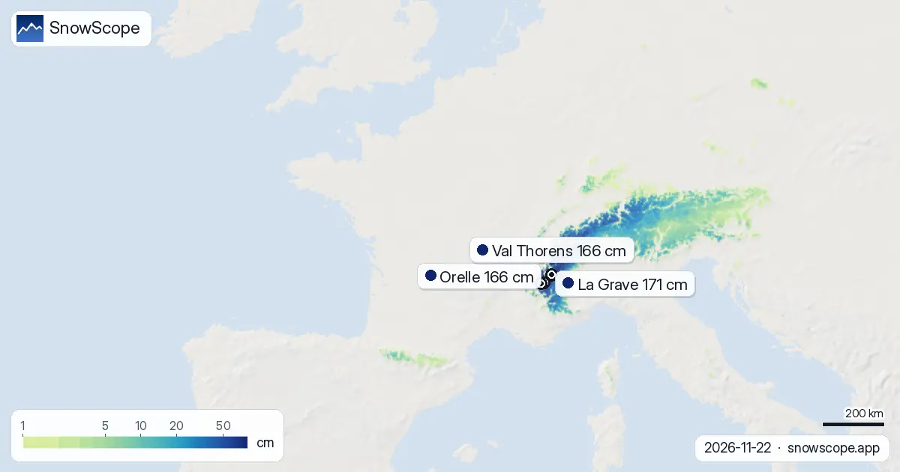

Alpes françaises en avance : La Grave à 171 cm, bien au-dessus de la moyenne de novembre
Les Alpes françaises enregistrent entre 50 et 285 % de la profondeur de neige normale pour fin novembre, La Grave en tête avec 171 cm. La région a connu des chutes de neige importantes sur trois jours cette semaine, portant la couverture totale à 18 % de blanc.
Consultez les prévisions neige en temps réel pour La Grave sur l'application SnowScopeHauteurs de neige, alertes poudreuse et carte 3D, gratuitement.Bien en avance sur la saison
La Grave détient 171 cm contre une moyenne de 82 cm pour cette date les années précédentes. Cela représente 146 % de la normale. Val Thorens devance encore : 166 cm mesurés, habituellement 46 cm fin novembre. Orelle et Alpe d'Huez Grand Domaine tournent respectivement à 150 et 260 % de leur moyenne saisonnière. Seules des chutes de neige précoces massives peuvent produire ces chiffres.
Cinq grands domaines se situent désormais bien au-dessus de leur profondeur médiane historique, une configuration rare aussi tôt en saison. Nous mesurons ces valeurs à la base de chaque domaine ; la profondeur réelle en plus haute altitude sera supérieure.
| Station | Aujourd'hui | Normale à cette date | Part de la normale |
|---|---|---|---|
| La Grave | 120 cm | 82 cm | 146 % |
| Orelle | 99 cm | 66 cm | 150 % |
| Val Thorens | 131 cm | 46 cm | 285 % |
| Les Deux Alpes | 59 cm | 30 cm | 197 % |
| Alpe d'Huez Grand Domaine | 65 cm | 25 cm | 260 % |

Comment la neige est arrivée
Trois jours de précipitations continues ont fait le travail. Le massif du Mont-Blanc a enregistré les chutes les plus importantes : 249 cm en 72 heures. Les Alpes françaises du nord en ont reçu 150 cm, et le sud 132 cm. Le pic sur une journée a atteint 56 cm le 22 novembre.
La couverture sur la zone cartographiée atteint désormais 16 440 km², contre 11 880 km² hier. C'est 38 % de surface supplémentaire en blanc en seulement 24 heures. La limite de la neige s'établit à 1 600 m, laissant les pentes basses nues mais les hautes altitudes bien équipées.

Où trouver les meilleures conditions
La Grave domine avec 171 cm et 127 cm de neige gagnée en trois jours. Orelle et Val Thorens affichent toutes deux 166 cm, avec 121 cm sur la même période. Ces zones de haute altitude autour de 3 200 à 3 500 m ont été à l'abri du vent et capturent le plus d'humidité. Les Deux Alpes et Alpe d'Huez Grand Domaine ont respectivement 128 et 125 cm, toujours solide mais moins que leurs voisines de haute altitude.
Au-dessus de 2 500 m, la profondeur moyenne atteint 56 cm et la couverture neigeuse 98 %. La bande 2 000 à 2 500 m affiche 25 cm de moyenne avec 92 % de couverture. Sous 2 000 m, les conditions s'amenuisent rapidement : la bande 1 500 à 2 000 m averages 11 cm at 62 percent coverage.
Ce qui arrive ensuite
D'autres neiges arrivent vers le week-end. Au 25 novembre, SnowScope prévoit 29 cm possible, la journée la plus chargée de la semaine à venir. Le total de neige fraîche sur les trois prochains jours devrait atteindre 35 cm dans les meilleurs secteurs, avec 38 cm supplémentaires possible sur sept jours. La situation météo suggère un flux d'humidité soutenu venant de l'ouest vers les Alpes.
La Suisse à l'est affiche déjà 71 % de couverture blanche et se remplira aussi. L'Italie accuse du retard à 33 %, bien que La Thuile en tête affiche 84 cm. La France devrait prolonger son avance si la prévision se confirme.
Neige par altitude
Les bandes d'altitude racontent toute l'histoire. Les pics élevés au-dessus de 2 500 m sont ensevelis : 56 cm de moyenne avec 98 % de blanc. Descendez à 2 000 à 2 500 m et vous avez 25 cm à 92 % de couverture, toujours solide. La bande 1 500 à 2 000 m est inégale à 11 cm de moyenne et 62 % de couverture. Sous 1 500 m, la neige est clairsemée ou absente.
Une neige précoce aussi importante signifie que les rochers et reliefs sont probablement sous des plaques minces aux altitudes moyennes. Les skieurs en zone 1 500 à 2 000 m doivent rester vigilants sur ce qui peut être caché.
La semaine en contexte
Il y a une semaine, la France avait seulement 10 750 km² de couverture neigeuse. Hier, c'était 11 880 km². Aujourd'hui, nous voyons 16 440 km². Le saut depuis le 16 novembre montre combien cet événement est rare : un gros coup de neige précoce qui a comblé le vide entre le démarrage saisonnier et la neige typique de mi-novembre. Les Arcs a tenu la tête deux jours, puis Orelle, maintenant La Grave. Ces changements reflètent où la masse d'air la plus humide a frappé chaque secteur.
Les 190 domaines avec neige mesurable sur 223 au total est un bon chiffre pour fin novembre. Les prévisions de deuxième semaine (jours 8 à 14 après aujourd'hui) montrent moins de neige : maximum 17 cm à travers la première semaine de décembre, suggérant que cet événement ne se répétera pas immédiatement.
Conseils aux skieurs
- Allez à La Grave, Orelle ou Val Thorens au-dessus de 2 500 m si vous pouvez atteindre ces sommets ; des bases de 171 à 166 cm et 98 % de couverture neigeuse à cette altitude offrent le ski le plus sûr.
- Restez vigilants en zone 1 500 à 2 000 m : 11 cm de moyenne avec 62 % de couverture signifie des rochers apparents et des plaques minces. Consultez le bulletin d'avalanche officiel avant de skier hors-piste dans n'importe quel secteur.
- Les basses altitudes sous 1 500 m sont encore majoritairement nues ; visez les hautes altitudes et les pentes nord pour trouver une couverture continue.
- D'autres neiges sont prévues jusqu'au 25 novembre et au-delà ; les conditions s'amélioreront encore au week-end, particulièrement pour les zones d'altitude moyenne.
À propos de ces chiffres
Les hauteurs de neige des stations sont la neige la plus épaisse sur le haut du domaine à la date indiquée ; ce sont des estimations pour une zone, pas une mesure en un point. Les prévisions peuvent changer. Consultez toujours le bulletin d'avalanche officiel avant le hors-piste.
Citer ce bulletin
Pour la recherche, l'enseignement ou la presse : chiffres et graphiques réutilisables librement sous CC BY 4.0 avec cette citation.
SnowScope (2026), Alpes françaises en avance : La Grave à 171 cm, bien au-dessus de la moyenne de novembre, https://snowscope.app/blog/fr/2026/11/france-snow-ahead-of-normal-22-november-2026.html, consulté le 2026-11-22
SnowScope (Atlas Labs). (2026, November 22). Alpes françaises en avance : La Grave à 171 cm, bien au-dessus de la moyenne de novembre. SnowScope snow reports. https://snowscope.app/blog/fr/2026/11/france-snow-ahead-of-normal-22-november-2026.html
BibTeX
@misc{snowscope2026francesnowaheadofnormal2,
author = {{SnowScope (Atlas Labs)}},
title = {Alpes françaises en avance : La Grave à 171 cm, bien au-dessus de la moyenne de novembre},
year = {2026},
month = nov,
howpublished = {\url{https://snowscope.app/blog/fr/2026/11/france-snow-ahead-of-normal-22-november-2026.html}},
note = {Published 2026-11-22 11:21 UTC; accessed 2026-11-22}
}· CC BY 4.0 · Méthodes, données et outils →
La Grave : neige et température selon l'altitude, cet hiver vs l'hiver dernier (outils) →
Suivre La Grave
Gratuit : un message quand la neige arrive, et la météo chaque matin.
Autres bulletins neige

Les Deux Alpes : 38–42 cm de neige fraîche en 72 heures (Alpes, 14 novembre). La Grave a reçu 53 cm de neige fraîche en 72 heures, dont 7 cm au cours …

La Grave domine les Alpes avec 97 cm en versants supérieurs. La couverture neigeuse se réduit alors que le début d'hiver s'installe inégalement dans la région le 15 novembre.